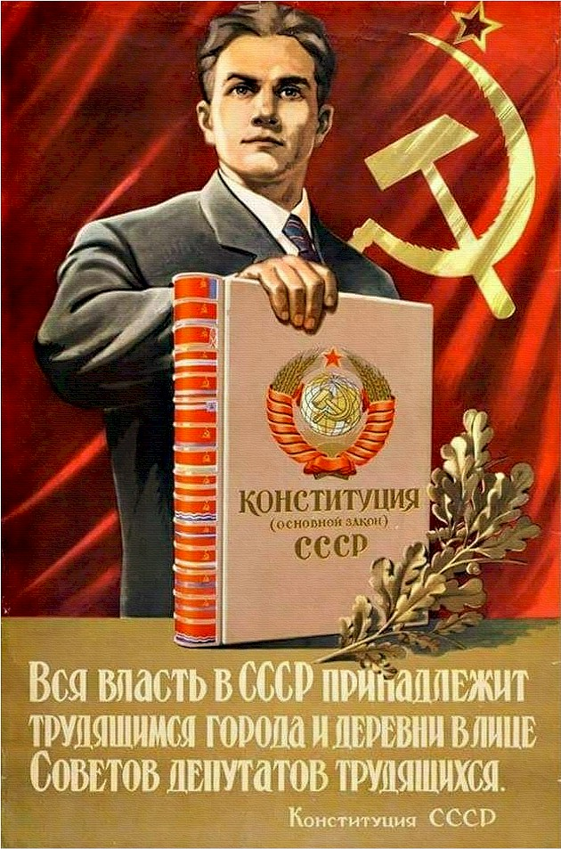
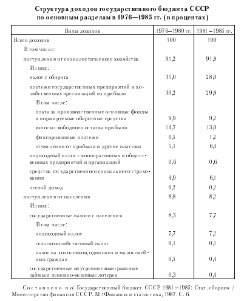
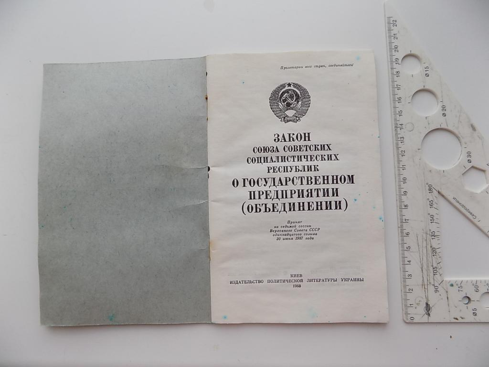

Структура доходов бюджетов СССР в 1965—1985 гг.

Основы бюджетного устройства СССР были установлены Конституцией СССР, определявшей основные принципы распределения доходов и расходов между бюджетами. Поступления от социалистического хозяйства, включавшие налог с оборота, платежи из прибыли, средства государственного социального страхования, подоходный налог с кооперации, колхозов и предприятий общественных организаций, давали свыше 91% доходов государственного бюджета.
В бюджеты союзных республик поступали следующие доходы:
- -платежи из прибыли государственных предприятий и хозяйственных организаций республиканского и местного подчинения;
- -лесной доход, подоходный налог с колхозов, а также подоходный налог с кооперативных и других общественных организаций, уплачиваемый их республиканскими и местными органами и подчиненными им предприятиями и организациями;
- -сельскохозяйственный налог;
- -отчисления от подоходного налога с населения в размере 50%;
- -отчисления от поступлений по реализации государственных внутренних выигрышных займов в размере 50%;
- -государственная пошлина, налог с доходов от демонстрации кинофильмов, местные налоги и другие доходы, устанавливаемые в порядке, предусмотренном законодательством СССР.
Основную часть доходов составляли поступления от социалистического хозяйства. В государственные бюджеты союзных республик передаются отчисления от налога с оборота и других общесоюзных государственных доходов; средства государственного социального страхования на выплату пенсий.
За период с 1975 по 1986 г. в составе доходов государственных бюджетов постепенно снижалась доля налога с оборота и местных налогов, при этом возрастала доля платежей государственных предприятий и хозяйственных организаций из прибыли и государственных налогов с населения. В составе доходов государственных бюджетов на долю налога с оборота приходилось 27,2%, на долю платежей государственных предприятий и хозяйственных организаций из прибыли — 24,4, на долю подоходного налога с колхозов, кооперативных и общественных предприятий, организаций — 2,1, на долю государственных налогов с населения — 1,8%.

Доходы местных бюджетов формировались за счет поступлений от народного хозяйства. В местные бюджеты поступали: платежи из прибыли предприятий, хозяйственных организаций местного подчинения, налог с доходов от демонстрации кинофильмов, государственная пошлина, местные налоги и некоторые другие доходы.
Местные налоги и сборы в общей налоговой системе играли лишь вспомогательную роль. Местные налоги устанавливались Верховным Советом СССР и поступали в ведение местных Советов народных депутатов.
При недостаточности указанных закрепленных доходов для финансирования мероприятий, предусмотренных планом экономического и социального развития, в порядке бюджетного регулирования в местные бюджеты передавались отчисления от государственных налогов и доходов в определенных размерах от сумм этих доходов.
Начиная с 1985 г. в местные бюджеты зачислялись в полном размере суммы налога с оборота, уплачиваемые объединениями, предприятиями, организациями местной промышленности, бытового обслуживания населения и потребительской кооперации, а также средства, полученные в результате введения временных надбавок к розничным ценам на товары народного потребления улучшенного качества, в размере 50% сумм, запланированных к поступлению в государственный бюджет союзной республики.
Собственно налоговую систему СССР в 1970—1980-е гг. составляли: подоходный налог, взимаемый с кооперативных предприятий и общественных организаций,
колхозов, а также с населения, налог на холостяков, одиноких и малосемейных граждан СССР, сельскохозяйственный налог и местные налоги.
В СССР подоходный налог изымался в двух основных формах: подоходный налог с населения и подоходный налог с кооперативных и общественных организаций.
Кооперативные и общественные организации уплачивали следующие виды налогов: подоходный налог с кооперативных и общественных организаций, земельный налог, налог с владельцев строений.
Подоходный налог с кооперативных и общественных организаций представлял собой прямой налог, взимавшийся в виде части прибыли предприятий и хозяйственных органов потребительской кооперации и общественных организаций.
Помимо подоходного налога с кооперативных предприятий взимался налог с владельцев строений.
Налог взимался с кооперативных предприятий, организаций и учреждений за любые строения, находящиеся в их собственности или переданные им в пользование государственными и общественными предприятиями и организациями; граждан СССР, иностранных физических и юридических лиц, лиц без гражданства за принадлежащие им строения на территории СССР.
В сфере подоходного обложения граждан с 1960 г. в СССР началось постепенное снижение налогов с населения путем повышения необлагаемого минимума и расширения налоговых льгот. Неоднократно повышался не облагаемый налогами минимум заработной платы рабочих и служащих, уменьшен размер подоходного налога с граждан, занимающихся кустарно-ремесленными промыслами, предоставлены льготы по налогообложению участникам Великой Отечественной войны и некоторым другим категориям граждан.
Подоходный налог с населения — основной вид прямых налогов, взимаемый с доходов физических лиц. В СССР подоходный налог действовал в двух основных формах: подоходный налог с юридических лиц и подоходный налог с населения.
Налогоплательщиками являлись советские и иностранные граждане, имевшие на территории СССР источники доходов. Плательщики налога в зависимости от источника их дохода подразделялись на несколько групп. Для каждой из них был предусмотрен особый порядок обложения, различные размеры необлагаемого минимума, скидки и льготы
Реформы связанные с перестройкой (1985-1991 гг.)

В связи с перестройкой, начавшейся в 1985 г., система платежей в бюджет была подвергнута коренному реформированию. К основным мероприятиям налоговой реформы этого периода следует отнести установление платы за патент на право занятия индивидуальной и трудовой деятельностью и принятие Закона СССР от 30 июня 1987 г. «О государственном предприятии (объединении)».
Этот закон был призван усилить централизованное начало развития народного хозяйства, повысить значение экономических методов управления, создать механизм реального хозяйственного расчета и самофинансирования на предприятиях. Предполагалось, что
изменения, вносимые указанным законом, позволят реформировать заторов реформы, активное использование товарно-денежных отношений, финансово-кредитных рычагов, системы экономических стимулов могло быть осуществлено при сохранении централизованного планового руководства народного хозяйства.

В последующие годы издается целый ряд актов законодательства по налогообложению отдельных сфер экономической деятельности, которые впоследствии были систематизированы в едином законодательном акте. Этот закон установил обязанность предприятий, объединений и организаций уплачивать следующие общесоюзные налоги: налог на прибыль, налог с оборота, налог на экспорт и импорт.
Постоянные изменения вносятся в налоги, взимаемые с граждан. В соответствии с Законом СССР от 23 апреля 1990 г. «О подоходном налоге с граждан СССР, иностранных граждан и лиц без гражданства» устанавливаются самостоятельные режимы налогообложения доходов граждан от ведения крестьянского хозяйства и доходов от индивидуальной трудовой деятельности.
Налоговое законодательство рассматриваемого периода было нацелено на развитие предпринимательской деятельности граждан, ее поддержку, что выразилось в установлении более низких ставок подоходного налога для этой категории налогоплательщиков в сравнении с другими. Все это происходило в условиях обострявшейся кризисной экономической и политической ситуации в стране, несогласованности республиканскими и межнациональных отношений. Но правительство искало решение в стабилизации экономики и переходе к рыночным отношениям, об в деятельности союзных и республиканских органов власти, осложнившихся взаимоотношений союзной власти с этом нам свидетельствует постановление Съезда народных депутатов РСФСР от 7 декабря 1990 г. «О мерах стабилизации экономики и пере. ходу к рыночным отношениям в РСФСР». Дальнейшие меры правительства заключались во внесении Верховным Советом СССР поправок к принятому им ранее, 23 апреля 1990 г. Закону «О подоходном налоге с граждан СССР, иностранных граждан и лиц без гражданства». Была упрощена шкала ставок налога и установлена в одинаковой пропорции для всех налогоплательщиков, понижен до 30%. Также в 1991 г. Указом Президента СССР вводится налог с продаж, вносимый юридическими лицами и взимавшийся в конечном итоге с потребителей через соответствующую надбавку к цене товара.
Реализация намеченных мер не состоялась в связи с распадом СССР. Прекращение существования Союза ССР констатировали руководители Белоруссии, России и Украины, подписавшие 8 декабря 1991 г. Соглашение о создании СНГ.